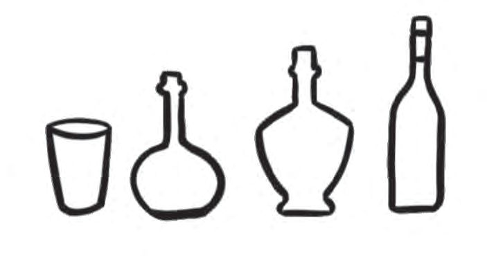

3 WATER AND LIFE
Where are
you going so
hurriedly?
If I don’t flow and
enrich the land, people
will suffer.
Illustration 3.1
What makes the river say this?
What do we use river water for?
Can river water be used directly for drinking and other domestic purposes?
Analyse the illustration given below.
1
6
Indicators
3
2
5
4
Illustration 3.2
Purification stages of river water
1. Filter out large debris.
2. Allow waste to settle.
3. Strain through multi-layered sieves.
4. Disinfect
Distribution stages of fresh water
5. Store in tank.
6. Distribute water to houses.
The river water gets delivered to the houses after it is being purified.
Do you get the water regularly in the same way?
What are the other sources of water you depend on?
Write them down.
• Well
•
•
•
How many litres of water do you need in a day?
Take a look at the table showing the approximate amount of water used
by one person for various purposes.
Approximate daily use of water
Use of water
Quantity (in litres)
To drink
2.5 - 3.5
To cook food
3.0 - 4.0
To wash vessels
6.0 - 8.0
To bathe and to wash clothes
30.0
For sanitation
50.0
For other purposes
30.0
Total
121.5 - 125.5
1
Litre
Table 3.1
Compare your daily use with the usage in the given table.
We have seen the daily use of water, haven’t we?
We can control and limit the use of certain things, but not the drinking
water.
Increasing demand and decreasing availability
Availability of fresh water is decreasing due to increase in
population and increase in the level of water pollution. It is
estimated that 200 crore people in the world do not have access
to sufficient amount of fresh water. If this situation continues,
it is expected that the water shortage will become more severe
in the coming years. Millions of people die all over the world
every year due to diseases caused by water pollution.
For what purpose do you use the water most? How many litres of water
do you use approximately in your home per day? Find out and write it
in your science diary.
What is the importance of water in our body?
See the approximate amount of water in our body.
Brain - 73%
Heart - 75%
Blood - 94%
Kidney - 79%
Lungs - 83%
Muscles - 75%
Bones - 31%
Illustration 3.3
Water is an important component of the human body.
Water is essential for all life functions.
Basic Science V
Water in plants
Plants also need water.
What are the functions of water in plants?
Look at the illustration.
To transport
food from
leaves to other
parts of plant.
For photosynthesis
To transport
the absorbed
minerals to the
leaves.
To maintain the
structure of the
plant body.
Illustration 3.4
All living beings need water for life functions.
Colour and shape
It does not
have colour or
odour. So it must
be pure water.
Illustration 3.5
Did you notice the child’s opinion?
Do you agree with this statement?
42
Basic Science V
Page 43
Figure fig_ch02_p043_01 (Page 43)

Figure fig_ch02_p043_02 (Page 43)
Some information from water quality testing report is given below.
Tested factor
Presence
Colour
No
Odour
No
Bacteria
Yes
Table 3.2
What is the benefit of testing water like this? Discuss.
Write the definition of pure water.
To find out whether the water you are drinking is clean, take a sample
of the water and send it to the quality testing labs in your locality to get
a test report.
Does water have a shape?
Illustration 3.6
Take water in containers of various shapes. Is there a relationship between
the shape of the water and the shape of the container?
Observe the shape of the water in each container and draw it in your
science diary.
Did you see the paper boat floating in the water?
Which of the following objects will float in water?
Can you guess?
Check whether the guesses are correct and mark your findings in the table.
Objects
Guess
Stone
Balloon
Coin
Wood piece
Camphor
Plastic
Iron nail
Leaf
Wax
Ice
Table 3.3
Shall we do an experiment using the following items?
Sugar, salt, vinegar, baking soda, detergent,
kerosene, coconut oil, wax, camphor, copper sulphate,
potassium permanganate
Which of the above substances dissolve in water?
Are there any substances that do not dissolve in water? Write your guesses.
Conduct the experiment and list your findings.
Substance that dissolves in
water
• Sugar
•
•
•
•
Substance that doesn’t
dissolve in water
• Wax
•
•
•
•
Table 3.4
You have seen that some solids and liquids dissolve in water.
Do gases dissolve in water? Can you guess.
Look at the picture.
Illustration 3.9
Where do the fishes in the aquarium get oxygen to breathe?
Have you seen the bubbles coming out of the soda bottle when you open
it? How is soda water made?
Soda water is made by dissolving carbon
dioxide gas in water. The bubbles are
caused by the release of carbon dioxide
gas when the soda bottle is opened.
What was dissolved when the lemon juice was prepared?
Where did they dissolve in?
A substance that dissolves is called a solute and the substance
in which it dissolves is called a solvent. A solution is formed
when the solute is dissolved in the solvent.
List the solution, solute and solvent in each of the previous activity.
Solution
Sugar solution
Soda
Solute
Sugar
Solvent
Water
Table 3.5
Find more substances that dissolve in water and expand the table.
How do you remove jackfruit gum and tar if they stick?
Why can’t these be washed off with water?
What is the best way to remove ballpoint pen ink on clothes?
Are the substances soluble in water, soluble in kerosene and coconut oil too?
Basic Science V
47
Page 48
Figure fig_ch02_p048_01 (Page 48)
Let’s experiment.
Solute
Solvent
Sugar
Salt
Baking
soda
Copper
sulphate
Camphor
Water
Kerosene
Coconut oil
Table 3.6
Analyse the completed table and write down the findings.
Water has the ability to dissolve many substances.
Hence water is called the universal solvent.
Write more examples that take advantage of the dissolving capacity of
water.
• To wash clothes
•
•
Do the following experiment using water, sugar and ink.
Situation 1
Take water in two glasses and mix sugar grains in one and powdered
sugar in the other.
Situation 2
Take two glasses of water. Dissolve sugar in the first glass with stirring
and dissolve the sugar in second glass without stirring.
Situation 3
Take hot water in one glass, cold water in another glass and mix a drop
of ink in each.
Is there any difference in the speed at which sugar and ink dissolve?
Find out and write down the factors that affect the speed of dissolution
of substances.
Water in many forms
Look at the picture.
How is ice formed?
Ice is the solid form of water.
Figure 3.1
What are the uses of ice?
• To preserve food items from spoiling
•
•
What happens if the ice is left outside for a short time?
What is the reason for this?
Prepare a note by observing changes that happen to ice in different
situations.
What are the different steps included in an experiment note?
Aim
:
Materials
:
Procedure
:
Observation :
Inference
:
Situations
Observations
1. When ice is kept in a vessel
2. When ice is heated
3. When the water in the
vessel boils
4. When looking at the bottom
of the lid of the vessel, after
boiling the water
Table 3.7
In many situations we use the ability of water to conduct heat. Which are
those situations.
• For cooking rice
•
•
•
Haven’t you noticed that when water is heated, it rises up as steam?
What happens to the moisture in the wet clothes as they get dry?
Discuss.
The spreading of small particles of liquid from its surface to
the surroundings is called vapourisation. As the substance
heats up, the rate of vapourisation increases. Vapourisation
occurs at all temperatures. Water is the only substance that
exists in nature in all the three states : solid, liquid and gas.
Water level
Look at the builder who measures the level using the level tube filled
with water.
Illustration 3.10
Fill a level tube with water and check the level of different places in your
classroom.
Make the apparatus as shown in the picture. Pour water in any bottle and
observe what is happening.
Write your findings in your science diary.
What will happen to the water level in the wells of the nearby houses
when water bodies dry up?
Will the uncontrolled use of water by industries affect the availability of
water in that area?
Discuss and write down the findings.
Water maintains its level. This is a property of water.
Water sources
Earth is a watery planet.
Observe the pictures. What is the main body of water on Earth?
Land
Sea
Illustration 3.12
Sea water contains large amount of dissolved salts, so it cannot be used
for daily needs.
Basic Science V
Write down the sources of fresh water around you.
Water reaches these water sources through rain.
Water drop says..
Living beings cannot live without us. As the water bodies get
heated up, we rise into the atmosphere. We then get cooled and
turn into rain clouds. Then small particles in the rain clouds
combine together as raindrops and fall to earth. Thus we become
part of water sources.
Living beings depend on the fresh water available on earth. But some
human activities are causing water pollution.
Observe the cases given below.
Figure 3.3
Conduct a class seminar on water pollution and its remedies.
Let us conserve for future
We are in a place that receives large amount of rainfall. But in summer,
there is drought in many areas. If we harvest rainwater, we can ensure
water availability even in summer.
Take a look at some of the rainwater harvesting methods illustrated.
Rainwater storage tank
Check dam
Stone wall
Well recharging
Figure 3.4
What other methods can be used for water storage?
Find out the methods that are being used in your area.
Examine the test report on water quality made on three different
sources. Analyse the table and write your findings.
Property
River
Pond
Well
Colour
Muddy
Muddy
Clear
Odour
Foul odour
Foul odour
No odour
Organic waste
Yes
Yes
No
Chemical waste
Yes
Yes
No
a) Which source of water is the safest to drink?
b) Can we make river and pond water potable. How?
c) What can we do to prevent pollution of water sources?
4.
The properties of water are listed. Find out and complete the table
with suitable details from daily life.
Properties of water
Situation
Conducts heat
Maintains level
Universal solvent
Ability to vapourise
What is the main source of drinking water in your locality? Let’s
conduct a survey. Information should be collected about the sources
of drinking water in your house and three neighbouring houses.
Drinking water source
In my house
Neighbourhood houses
House 1
House 2
House 3
Well
Public water supply
system
Borewell
Rain water storage tank
Other sources
Consolidate the information collected by each one and present the findings
in the class.
2.
Study and prepare a note on your school’s water usage.
Information to be collected
●
●
●
●
●
3.
56
What are the water sources at the school?
How much water is used per day?
For what needs?
For what purpose water is most used?
What practical suggestions can you make for reducing
water use at present?
Design an apparatus to demonstrate experimentally that
water maintains its level.